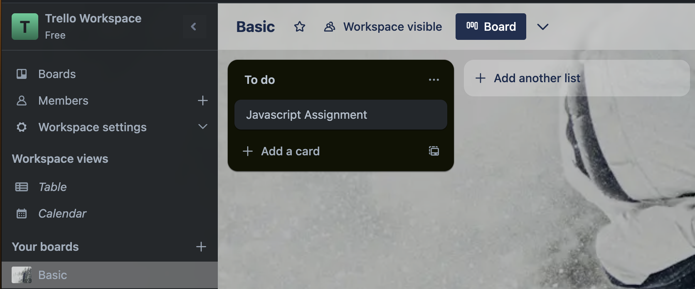
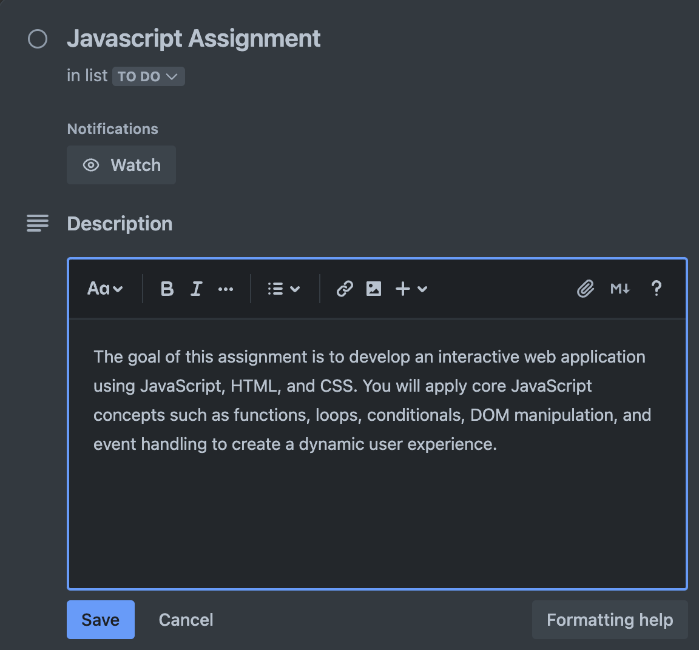
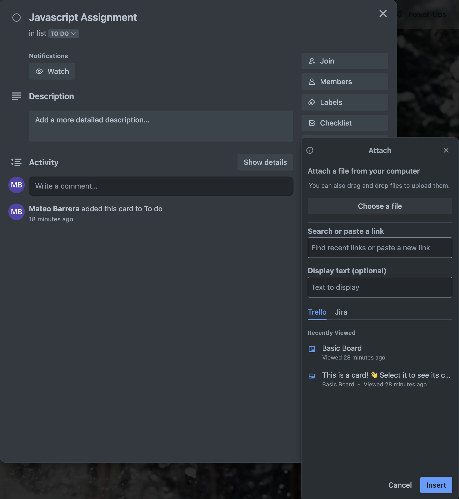

How to Add and Manage Trello Cards
Overview
In Trello, cards represent individual tasks, ideas, or work items. They are the core unit of project management in Trello.
What Are Trello Cards?
Trello cards act like Nigital Sticky Notes where you can assign tasks, track progress, and collaborate with team members.
Step 1: Creating a New Card
- Open a Trello board where you want to create a card.
- Choose a list where the card should be placed.
- Click Add a card at the bottom of the list.
- Type the task name in the input box.
- Click Add card to create the card.

Creating a new Trello card by entering a task name and clicking 'Add card'.
Step 2: Customizing a Card
After creating a card, click on it to open the Card Details View, where you can:
Add a description – Provide details or instructions for the task.
Attach files – Upload images, PDFs, or documents.
Create a checklist – Break tasks into smaller steps.
Set due dates – Ensure deadlines are visible.
Add labels – Categorize tasks for easy filtering.
 
Customizing a Trello card by adding descriptions, attachments, and due dates.
Don't Forget Due Dates!
If a task has a STRICT deadline, always set a DUE date so it doesn’t get overlooked.
Trello only sends reminders if a due date is set.
Conclusion
You now know how to create, customize, assign, and organize Trello cards effectively.